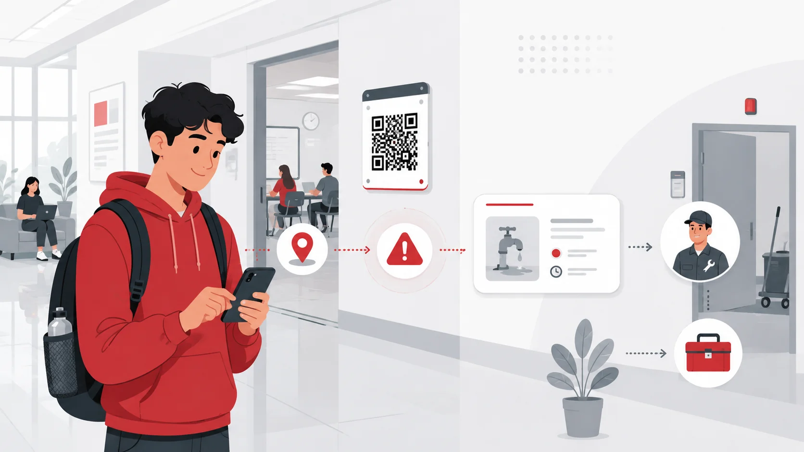

Reporta incidencias al instante
CampusLink conecta a estudiantes, docentes y personal de soporte para reportar, ubicar y dar seguimiento a incidencias de infraestructura, bienestar y seguridad dentro del campus

- Mobiliario
- Eléctrico
- Multimedia
- Limpieza
- Internet
- Otro
Problema actual
La falta de un canal eficiente y centralizado para reportar incidencias de infraestructura, bienestar y seguridad en el campus genera demoras, poca visibilidad y frustración para los usuarios
-
Reportes dispersos
-
Falta de seguimiento
-
Información incompleta para soporte

Nuestra solución
CampusLink convierte una incidencia del campus en un reporte claro, ubicado y trazable, para que el equipo de soporte pueda actuar con mayor rapidez.
- Reporte rápido QR y formulario breve
- Ubicación precisa Ambiente identificado
- Evidencia clara Foto y descripción
- Seguimiento visible Estado del reporte
Sobre el producto
Mira en un minuto cómo CampusLink facilita reportar y dar seguimiento a las incidencias de tu campus.
¿Cómo funciona CampusLink?
Reporta una incidencia en pocos pasos y permite que soporte reciba información clara desde el primer momento.
Beneficios
Cada función de CampusLink mejora algo concreto para quien reporta y para quien resuelve
-
01
Reporte más rápido
Reporta desde un QR y un formulario breve, sin perder tiempo buscando a quién avisar
Resultado: Menos fricción para estudiantes y docentes
-
02
Ubicación más precisa
Identifica el ambiente o zona afectada; soporte recibe el lugar exacto del problema
Resultado: Menos confusión y desplazamientos innecesarios
-
03
Evidencia clara
Foto y descripción breve para entender la falla antes de llegar
Resultado: Mejor diagnóstico y atención más preparada
-
04
Seguimiento transparente
Estados visibles del reporte: pendiente, en proceso y resuelto
Resultado: Menos incertidumbre y mayor confianza
-
05
Priorización operativa
Organiza los reportes por criticidad, categoría, estado o ubicación
Resultado: Atención más eficiente de los casos importantes
Para quiénes
CampusLink está diseñado para quienes reportan incidencias y para quienes las atienden dentro del campus.
-
Estudiantes
Quienes usan los espacios del campus a diario.
ProblemaDetectan fallas en aulas, baños, laboratorios o zonas comunes, pero no siempre tienen un canal claro para reportarlas.
AcciónReportan incidencias con QR, foto y descripción breve.
ValorSaben que su reporte no cae en el vacío y pueden revisar su seguimiento.
-
Docentes
Quienes dictan clase y dependen de los ambientes y equipos.
ProblemaUna falla técnica o de infraestructura puede interrumpir el desarrollo de una clase.
AcciónSolicitan atención cuando un ambiente o equipo afecta la continuidad académica.
ValorReducen pérdida de tiempo y mantienen mayor control durante la sesión.
-
Personal de soporte y operaciones
Quienes reciben y resuelven los reportes.
ProblemaReciben reportes incompletos, ambiguos o sin ubicación exacta.
AcciónVisualizan ubicación, categoría, evidencia y estado del reporte.
ValorPriorizan mejor y evitan desplazamientos innecesarios.
Vista de la app
Quiénes somos
Montimin es un equipo de estudiantes de Ingeniería de Software enfocado en crear soluciones digitales para mejorar la experiencia universitaria. Con CampusLink, buscamos facilitar el reporte y seguimiento de incidencias dentro del campus de forma rápida, clara y accesible.
-
Diego Yahir Chilingano Salas
Estudiante de Ingeniería de Software. Aporta pensamiento lógico, análisis de requerimientos y enfoque técnico para estructurar funcionalidades claras, viables y orientadas a resolver necesidades reales del campus.
-
Italo Gabriel Ninahuanca Garcia
Estudiante de Ingeniería de Software. Aporta organización de contenido y desarrollo del landing page, comunicando la propuesta de valor de CampusLink de manera clara y funcional.
Conversemos sobre CampusLink
CampusLink ayuda a universidades a centralizar el reporte y seguimiento de incidencias de infraestructura, bienestar y seguridad dentro del campus.
Solicitar información- Reporte rápido mediante QR
- Seguimiento del estado del caso
- Información más clara para soporte
- Mejor coordinación entre usuarios y operaciones
Ideal para instituciones que buscan una gestión más ordenada dentro del campus.